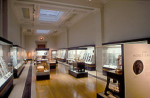

| |
There are approximately
9,000 coins, medals and banknotes on display around the British Museum.
More than half of these can be found in the HSBC Money Gallery (Gallery
68), while the remainder form part of the permanent displays throughout
the Museum. In addition there is a continuous programme of temporary
exhibitions in Gallery 69a.
The
HSBC Money Gallery
Room 68

Temporary
Exhibitions
Room 69a
Museum
Floor Plans
GALLERY
1 - THE ENLIGHTENMENT GALLERY
Case 5 - Antiquaries; gold mancus of Offa; pennies of the middle
Saxon kingdoms; pennies of Eadgar, Edward the Confessor and Henry III;
milled threepence of Elizabeth; medals depicting Sloane, Stuckley and
Folkes.
Case 9 - The Ancient Greek Ideal; Tomasson medals of the Parthenon sculptures.
Case 10 - Classical Revivals Neo-classical inspiration for contemporary
art; medals by Tomasson, Bentham and Moore.
Case 11 - King George III's Library The collection formerly owned by
King George III and bequeathed to the museum; series of royal medals
depicting the monarch's from William I to George II; Italian medals
of illustrious persons and living worthies; gold coins (aureii) of Brutus
and the Twelve Caesars; gold coins of Greek rulers and cities; British
chronological series of medals.
Case 13 - Understanding Greek Vases William Hamilton as scholar of Greek
vases; the influence of vases on coin design.
Case 14 - Curiosities Sir Hans Sloane's 'cabinet of curiosities'; Islamic
coins; medal-naval award; Cromwell trial piece.
Case 15 - Babylon Claudius Rich and the discovery of the site of Babylon
Case 18 - Languages Indian coins and the decipherment of script.
Case 20 - Magic, Mystery and Rites Human religious thought and belief.
Case 22 - The Pacific Voyages of 18th century Europeans in the Pacific;
medals depicting Captain Cook.
Case 24 - Egypt and Africa, Medals relating to Africa.
GALLERY
13 - GEOMETRIC AND ARCHAIC GREECE, 1050-520 BC
Case 4 - Archaic Greek Coins.
Case 7 - The Greeks in Egypt. Part of a hoard (buried in 485 BC) of
silver coins and ingots found at Benha el Asl (ancient Athribis) from
the Greek world of the Aegean and Asia Minor
GALLERY
15 - ATHENS AND LYCIA
Case 5 - The Coinage of Athens.
GALLERY
22 - THE HELLENISTIC WORLD, 323-31BC
Case 2 - The development of portraiture in the Hellenistic period; Alexander
and his successors; other non-Greek dynasts of the Eastern regions of
the Hellenistic world.
Case 8 - The Ptolemies and Egypt Portraits of the Greek rulers of Egypt
GALLERY
33 - THE JOSEPH E. HOTUNG GALLERY OF ORIENTAL ANTIQUITIES
This gallery
is divided into two sections.
Indian Section:
Case 4 - Early Indian coins.
Case 18 - Buddhist relics; Coins found enshrined in Buddhist stupas
in Pakistan and Afghanistan, from bronze coin of Kushan king Kadphises
(AD30-80) to silver coins of the late 7th-8th C.
Case 29 - Coins with Indian inscriptions containing dates, based on
a series of named eras; ancient coinage of western India showing the
role of the Satavahana kings in international trade of 1st-2ndC AD,
gold coin of the Roman Emperor Claudius, AD50-51, found in Southern
India.
Case 36 - Early Sri Lankan coinage, imitations of Roman 4thC coinage,
new local coinage of 8th-9thC, and 15thC coin with Tamil script.
Case 48 - Coinage of Southeast Asia Local issues of Burma in 8thC AD;
9thC silver conch tanka from Thailand; silver bar of Laos; silver coins
of 16thC-17thC Cambodia; silver coin of central Java, c. 10thC AD, inscribed
in Indian script.
Chinese
Section:
Case 21 - Chinese magic money Money for use in the afterlife, a 20thC
Hell banknote; coin-shaped good luck charms, fertility charm of Song
dynasty, AD960-1279; coin sword for exorcism, Qing dynasty 19thC.
Case 37 - Writing Various types of scripts (seal script, clerical script,
standard script etc) on a range of Chinese coins.
Case 50 - Chinese Monetary System; Cowrie shells as the earliest form
of money; bronze spade, knife and ant-nose money c.400BC; classic cash
coin (round bronze coin with square hole), originated in 221BC and made
up until 1912; use of silver ingots from 8thC AD; copies of imported
silver dollars; token money; bamboo tally; paper money of the Qing dynasty,
AD 1850-1864
Case 66 - Coins of the Silk Routes Coins showing East-West trading routes.
GALLERY
34 - THE JOHN ADDIS ISLAMIC GALLERY
Case 3 - Early Islamic Art in Syria, Iraq and Iran AD 700-1000 Early
Islamic coinage from the use of the Byzantine solidus to the coins of
Tabaristan (AD 713-716).
Case 10 - Coins of the Fatimids Coins minted for Caliph al-Mahdi (AD
912), coins from Sicily under the occupation of the Fatimids and coins
of the crusades.
Case 13 - Coins of the Zengids, Artuqids and Ayyubids from the 12th
and 13th centuries.
Case 20 - The Mamluk Dynasty AD1250-1517
Case 44 - Islamic Coins The case is divided into four sections, and
contains 170 coins showing the development of Islamic coinage.
Case 45 - Science and Magic Coins, glass coin-weights and a counterweighted
balance.
GALLERY
41 - THE EARLY MEDIEVAL ROOM
Case 2 - Economy & Trade Gold Byzantine coins; copper Fals minted in
Syria; bronze nummi minted in Carthage.
Case 9 - Late Antiquity and the Early Byzantine Empire Late Roman coins
Case 23 - Warriors AD 400-700 Grave group from Kent with coins reused
as weights; late 6th C gold tremmesis.
Case 25 - Britain in the 5th C. AD: Pirates, Soldiers and Settlers Part
of a clipped hoard of silver siliquae.
Case 26 - Siliquae as part of a hoard of cut tableware.
Case 28 - Ireland and the Vikings AD 800-1100 The first Irish coins.
Case 32 - Britain and Ireland: Settlers AD 800-1050 Viking coins minted
at York; Viking coins of Edmund; Anglo-Saxon memorial coins of Edmund.
Case 33 - Britain and Ireland: Loot and Trade AD 800-1050 Viking coin
of Sven Estridsen; coins tested for their silver content; Cuerdale hoard.
Case 34 - Carolingians and Ottonians AD 750-1050 Carolingian coins
Case 35 - Art of the Anglo-Saxon Church Trewhiddle hoard coins and fragments.
Case 36 - Kings and Magnates 8th C. silver coins; silver pennies of
Eadgar; Alfred the Great; Cnut, Edward the Confessor, Harold II and
William I.
Case 37 - Craft and Commerce Hexham hoard of stycas; coins hoarded in
chalk container; hoard of Edward the Confessor coins.
Case 38 - The Coming of Christianity AD 600-700
Case 39 - Runes and Writing Coins inscribed with runes; runic characters
on later coins.
Case 42 - Germanic and Viking Ornament AD 400-1100
Case 50 - Sutton Hoo Coins from the ship burial.
Case 51 - Rediscovering Byzantine Constantinople, Lead portrait medal
of John VII Palaeologos by Pisanello; facsimile of the 'Victory Medallion'
of Justinian.
GALLERY
42 - WESTERN EUROPE AND THE BYZANTINE WORLD AD500-1500
Case 2 - Byzantine Art and the West Coins of Tripoli, Edessa, Antioch,
Jerusalem and Frankish Cyprus.
Case 7 - Medieval Coinage 142 coins showing development of Medieval
coinage in Europe - origins of the penny in the 6thC; early gold coinage,
the gros and the florin; late medieval coinage.
Case 9 - Medieval Jewellery English coins from various the Coventry
Hoard (English sterling pennies of Edward I, 1270-71).
Case 2 - Italian Renaissance medals in lead, gold and bronze from the
15th-16th centuries including Papal medals and those of the leading
Italian dynasties.
Case 5 - The Renaissance in Northern Europe Medals of the Reformation
and leading reformers in Northern Europe; images of faith; 16thC medals
of religious and political allegiance
Case 6 - Tudor England Coins and medals of Henry VIII, Edward VI, Mary,
Elizabeth I and Mary, Queen of Scots.
Case 11 - 17th Century Britain
Case 12 - Coins and medals of the Thirty Years' War in Germany; medals
in 17th century France and Italy, including Papal medals and waxes.
Case 15 - Trade and territory; Spanish medals of the 16thC, early colonial
currency of 17thC Americas; medals referring to British and Spanish
colonies and exploration; examples of currency representing world trade
networks from end of the 15thC to the late 17thC.
Case 18 - European Monarchy; Coins reflecting the theme of the enlightened
absolutism in 18thC Europe; medals of the Habsburgs; coins and medals
of Russia, France and Portugal; Hannovarians and Jacobites; medals of
European monarchs; currency and medals of 18thC West Indies, India,
South and Central America; medals commemorating notable individuals
e.g. Captain Cook; coins and medals reflecting the contest for Empire
in the 18thC, and the French and American Revolutions.
GALLERY
47 - 19TH CENTURY EUROPE
Case 3 - Neo-Classical intaglios; Struck silver medal by A. Wyon, 1885,
after E.H. Baily's Eve at the Fountain.
Case 4 - Neo-Classical cameos; Gem engravers as medallists. The close
links between gem-engraving and dies for coins and medals; early 19thC
works of the medallists Johann Lorenz Natter, Edward Burch, Benedetto
Pistrucci and others.
Case 5 - Napoleon Medals, depicting the life and family of Napoleon,
including some from his medallic biography Histoire Metallique by Vivant
Denon, adopting the model provided by Louis XIV.
Case 7 - Early 19th Century Europe; Medals depicting people and events
of Georgian Britain - portraits of George III, Duke of Wellington, Nelson;
medals commemorating historical events - Abolition of Slavery, Peterloo
Massacre, Great Reform Bill, Industrial Revolution eg. Opening of Liverpool-Manchester
Railway; the medal in Russia - Tolstoy's medals of the Napoleonic Wars;
the art of the medal in early 19thC Europe - adoption of the neo-classical
style; the Wyons; Society medals.
Case 10 - Historical Revival of the Renaissance style Bronze portrait
medals of great men by Pierre-Jean David d'Angers (1788-1856), reflecting
Renaissance practice.
Case 13 - The Age of Queen Victoria
Case 16 - Arts and Crafts Designers
GALLERY
48 - 20TH CENTURY EUROPE AND AMERICA
Case 7 - Germany between the Wars Cast bronze medal by Otto Maczek to
commemorate the 1936 Berlin Olympics.
GALLERY
49- THE WESTON GALLERY OF ROMAN BRITAIN
Case 1 - Grave-groups
Case 2 - Weights and measures section
Case 7 - Stonea; Part of a hoard of 872 silver coins of the Iceni, c.
AD60, excavated by the British Museum at Stonea Grange, a Roman site
in Cambridgeshire; Roman 1st to 4thC bronze coins from the same site
Case 9 - Life in the Army, 37 gold aurei from a hoard buried at Bredgar,
Kent around the time of the conquest of AD43.
Case 10 - Coinage in Roman Britain AD43-400; Late Iron Age coins of
1st century BC showing influence of Roman coins; mixed Iron Age and
Roman hoards of the mid 1st century AD; system of coinage from AD70
- aureus, denarius, sestertius, dupondius, as; images of Emperors; references
to Britain on coins, including first known representation of Britannia;
coin use and forgery; coins from temple sites and water shrines; debasement
of coinage in 3rd century AD; radiates; reforms of Aurelian and Diocletian;
last Roman coins issued in Britain.
Case 11 - Gold and silver hoards, 1st-3rdC AD Silver denarius from the
Backworth hoard, Tyne and Wear, 1st-2ndC AD; coins of the Snettisham
jewellers hoard, Norfolk, buried after AD154/5.
Case 21 - Pottery; pottery money-box from Lincoln, 4thC AD, with coins
of the early to mid 4thC.
Case 23 -
Hoxne hoard; Selection of coins from
the 15,000 found at Hoxne, Suffolk, including solidi, siliquae and forgeries
of siliquae.
Case 18 - The Cordoba
Treasure Selection from the 302 Roman and native Iron Age Iberian
coins buried at Cordoba, in c. 100 BC
Case 19 - The Snettisham Treasure Iron Age coins from the Snettisham
Treasure, buried c. 70 BC.
Case 20 - The Essendon Hoard Coins from the Essendon hoard, mostly of
the British kings Tasciovanus and Cunobelin, c. AD 20-40
Case 25 - Making a Living: Casting Bronze Techniques used in the manufacture
of Iron Age coins - pellet moulds, coin blank; die for Gallo-Belgic
A stater; bronze British coin depicting a metal-worker making a drinking-cup.
Case 29 - Iron Age Coinage in Europe and Britain Earliest Iron Age coins
from the Danubian region of Central Europe, 2nd century BC, imitating
Macedonian coins of Philip II; coins of Gaul and Northern Gaul; early
and later British coinage, including gold coins of 1stC BC, iron bar
from Hod Hill, Dorset, probably used as currency, and coins of various
British regions and tribes - South Thames group (Atrebates and Regni),
other uninscribed (Durotriges), South West district (Dobunni), Northern
district (Corieltauvi) and Eastern district (Iceni); the end of Celtic
coinage.
Case 31 - Foreign Contacts; Part of a hoard of gold coins found at Alton,
Hampshire, buried around AD 25 together with jewellery imported from
Gaul - evidence of contact between Iron Age Britain and Gaul; includes
several rare British coins including one revealing the name of the king
Tincomarus.
GALLERY
54 - ANATOLIA IN THE 1ST MILLENNIUM BC
Case 4 - The invention of coinage Electrum Lydian coin of c 575 BC,
first silver coinage of Sardis.
GALLERY
65 - EGYPT AND AFRICA
Case 13 - Meroe: Centre of Commerce 300 BC-AD 350, Gold coins of King
Ezana of Axum representing his conversion to Christianity.
Case 17 - Religion and Writing in Christian Nubia; Gold coins of the
Byzantine Emperor Justinian I struck at Constantinople.
GALLERY
67 - KOREA
A selection of early Korean bronze coins; coins of the Choson; silver
Taedong coins and Korean charms.
GALLERY
69 - GREEK AND ROMAN LIFE
Case 2 - Burial Customs Silver obol of Athens.
Case 13 - Water Supply Two Roman bronze coins showing an aqueduct and
a fountain-house.
Case 19 - Chariot Racing Roman coins and medallions showing races at
the Circus Maximus, Rome.
Case 23 - Roman Music Bronze contorniate medallion depicting a water-organ,
late 4thC AD.
GALLERY
70 - ROME: CITY AND EMPIRE
Case 2 - Legendary Origins of Rome; Coins minted at Rome AD147, issued
by Antoninus Pius to show the legend of the founding of Rome; coins
showing the she-wolf and the twins Romulus and Remus.
Case 3 - Egypt in Rome; Coin of Octavian and Augustus depicting the
crocodile, representing the conquest of Egypt; coin of Octavian depicting
naval victory; coin of Augustus depicting 'abundance' as the bride of
the Nile.
Case 7 - Coins of Republican Rome and Italy; Earliest Roman currency
(aes signatum); coins showing the influence of Alexander the Great;
war against Hannibal of Carthage; Carthaginian coins; new Roman denarius
system (c. 210 BC); coins of the Social War (c. 90 BC); coins of Italian
and Sicilian cities; Republican coins with personal designs; experimentation
in coinage; Republican coins relating to contemporary events; posthumous
portraits; portraits of Civil War leaders eg Brutus; coins with portraits
of Mark Antony and his family; coin of Paestum (late 3rdC BC).
Case 8 - Augustus and his Successors; Portrait of the young Octavian,
Actium type, First Citizen type, series of coins illustrating Res Gestae
- Achievements of the Emperor.
Case 15 - The Emperor and Religion; Coins depicting various aspects
of the religious life of the Roman Emperors - Emperors as gods; deified
after death; in their religious role; scenes from the Saecular Games
of AD 88; the ten-year vows of Emperors; the cult of the Emperor in
the Provinces.
Case 18 - The Roman Army; Coins illustrating the German Wars; images
of trophies and captives; coins with badges of the Roman legions.
Case 19 - Hadrian and the Provinces; Coins of Hadrian minted c. AD135,
commemorating different regions of the Empire including Africa and Britannia.
Case 21- Lyons Coins from the Julio-Claudian Mint of Lyons, from its
foundation by Mark Antony in 43-42 BC to the reign of Constantine III
(AD407-11).
Case 23 - Africa Coins minted in Africa, from the Civil War, end of
the Republic to the 3rd-4thC mint at Carthage.
Case 26 - Ephesus Coins minted at Ephesus for circulation through the
province of Asia.
Case 27 - Judea Coins of the rulers of Judea, from the 1stC BC (Herod)
to the First and Second Jewish Revolts.
Case 28 - Roman Egypt Cleopatra to Hadrian.
Case 29 - Roman Egypt Four coins from a hoard of about 3000 coins, the
latest of Honorius AD 395-423, and the pottery flask they were found
in, in a tomb at Hawara.
Case 30 - Beaurains Hoard Gold coins from the Beaurains Hoard - official
gifts to the owner who served in Italy in the 280s, then Northern Gaul
in the 290s until his death in AD 315.
Case 35 - Roman Imperial coinage Coinage system from the early Empire,
(aureus, denarius and sestertius); Provincial and Civic coinage; inflation,
Diocletian's reform of coinage AD 294-6, the new Anummus coin.
GALLERY
71 - PRE-ROMAN ITALY
Case 5 - Coins of the Samnites and other Oscan-speaking peoples.
Case 13 - Etruscan coins, earliest 300 BC.
Case 14 - Etruscan coinage including a currency bar, coins made in Etruria
500-200 BC, other Italian coins e.g. the Samnite occupation of Campania,
Oscan communities subject to Rome; imitations of coins made by Greek
colonies of Southern Italy.
GALLERY
72 - CYPRUS
Case 7 - Early Cypriot coinage of the 6th to 3rdC BC; coins of Alexander
the Great; the Hellenistic World; Roman Cyprus 58 BC-AD 69 .
GALLERY
73 - COINAGE IN SOUTHERN ITALY AND SICILY
Case 69 - Silver from Taranto; early Sicilian coins; Timoleon and the
revival of Greek Sicily; Coinage of Carthage & Sicily; tyrants of Italy
Syracuse in the 5th to 3rdC BC.
|
|
|
|